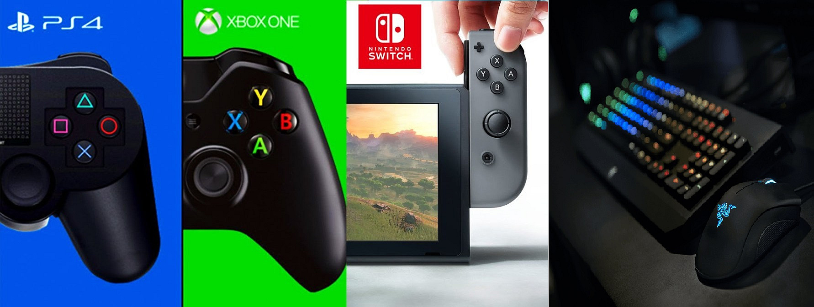

Platforms!
Save the World is available only for Windows, macOS,[c] PlayStation 4, and Xbox One, while Battle Royale and Creative were released for all those platforms, and also for Nintendo Switch, iOS,[c] and Android devices.[c] The game also launched with the release of the ninth-generation PlayStation 5 and Xbox Series X/S consoles.